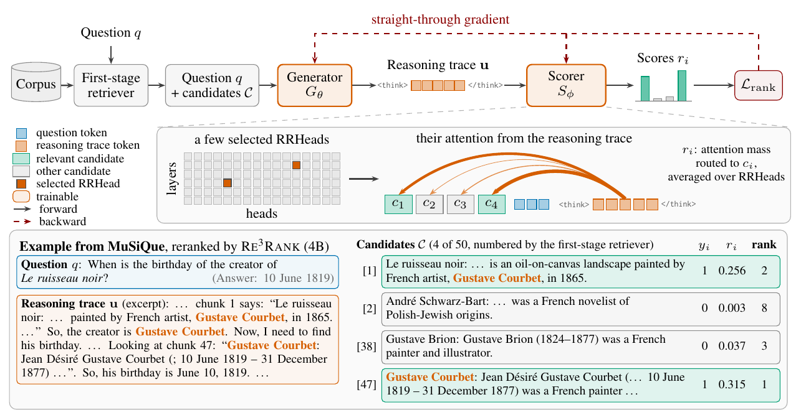
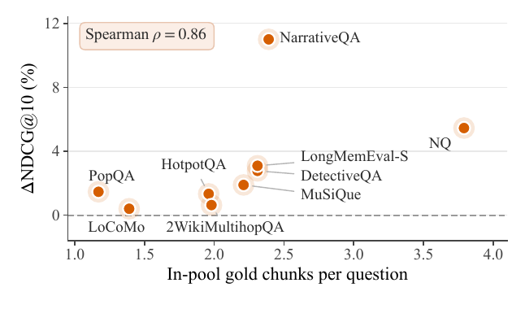
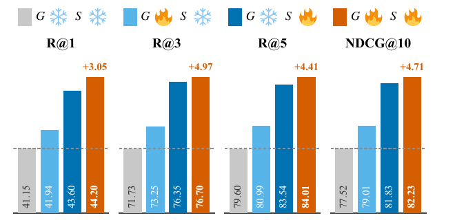

做 RAG 重排的人值得读这篇，因为它改的是一个大家默认不动的地方：用注意力给候选打分时，该拿什么去“看”候选。已有做法让问题本身的 token 去看，可问题常常缺了找证据要用的关键信息。Re3Rank 先让一个模型读完问题和 50 个候选，写一段推理过程，再让另一个模型拿这段推理里的 token 去看候选，按每个候选分到的注意力多少排序。在 9 个问答数据集上，4B 版本的 R@3 平均是 76.70，比同样用注意力打分、同样 4B 的 QRRanker 高 3.31 个点；0.6B 版本的 R@3 也超过了 32B 的 ReasonRank。换掉“看”的那一方，0.6B 就超过了 32B 的推理型重排器。
它到底在解决什么问题
重排器的任务是：第一阶段检索已经召回了 50 段文本（论文叫 chunk，下面叫候选），重排器要把真正有用的几段排到前面，再交给大模型生成答案。
有一类重排器不让模型输出排序，而是直接读模型内部的注意力。它把 50 个候选和问题拼成一段输入，候选在前、问题在后。模型里有少数注意力头（论文叫检索头）特别擅长把注意力投向相关的段落。问题的每个 token 在这些头里会把自己的注意力分给前面的各个 token，某个候选的所有 token 分到的注意力加起来，就是它的得分。QRRanker 就是这么做的，用的是问题的 token。
麻烦在于多跳问题。论文图 2 里有个 MuSiQue 的例子：问题是「Le ruisseau noir 这幅画的作者生日是哪天」。
| 候选（论文图 2） | 内容 | 是否相关 |
|---|---|---|
| [1] | Le ruisseau noir 是一幅油画，作者是法国画家 Gustave Courbet | 相关 |
| [47] | Gustave Courbet：生于 1819 年 6 月 10 日 | 相关 |
| [38] | 另一位叫 Gustave Brion 的画家的生平 | 不相关 |
| [2] | 一位法国小说家的介绍 | 不相关 |
问题里只有画名，没有画家的名字。拿问题的 token 去看，候选 [1] 好找，可第 47 段里一个字都对不上，很难分到注意力。推理过程则会写出「作者是 Gustave Courbet，现在要找他的生日……看第 47 段」。拿这段推理的 token 去看，[47] 就能分到大量注意力。
论文图 2 里，Re3Rank 给 [47] 打了 0.315 分，排第 1；[1] 是 0.256，排第 2；两个不相关的候选都不到 0.04。这个例子示意了推理文本里写出的画家名字，怎样把注意力引到问题本身指不到的那一段。
整体流程：一个模型写推理，另一个模型读注意力

线上使用时，一次请求分三步：
- 生成器读入「50 个候选 + 问题」，贪心解码写一段推理，最多 1024 个 token。
- 打分器是另一份同样大小的模型，读入「50 个候选 + 问题 + 这段推理」，只跑一次前向。
- 只看打分器里事先选好的两个注意力头。对每个候选，把推理里每个 token 投到它身上的注意力加起来，再对所有推理 token 取平均，得到它的分数，按分数从高到低排。
打分器不生成任何文字，排序直接从一次前向的注意力里读出来。这和 ReasonRank 这类推理型重排器不同，后者推理完还要把排序写成一串候选编号。
每个候选的分数怎么算
是选中的注意力头， 是推理 token 的位置， 是候选 的 token 所在的位置， 是位置 投给位置 的注意力。直觉上，就是“推理里的每个词平均把多少注意力投给了这个候选”。
一个手算的小例子（示意）：推理只有 2 个 token，在某个头里，第 1 个 token 把 0.5 的注意力投给候选 [47] 的各个 token（加起来），第 2 个 token 投了 0.3。这个头给 [47] 的分就是 (0.5+0.3)/2=0.4。另一个头算出 0.2，两头平均，[47] 的最终分数是 0.3。
为什么只用两个头
4B 模型共有 1152 个注意力头，大部分和找证据无关。论文在训练前，用 800 条带标签的样本，让基座模型先写推理，再统计每个头从推理 token 投给相关候选的平均注意力，取最高的两个。4B 模型选中的是 (23,10) 和 (21,8) 这两个头，编号从 0 开始，前一个数是层，后一个数是头。挑头只在训练前做一次。训练时，标签还用来区分排序损失里的相关和不相关候选；线上使用时不需要任何标签。
怎么训练：让排序损失也能教生成器
打分器输出的是连续的注意力分数，排序损失可以直接对它求导。生成器就麻烦了：它输出的是采样出来的离散 token，梯度传不过去。
论文用了直通估计（straight-through estimator）。做法是这样的：前向时，打分器拿到的还是生成器实际写出的那个 token 的 embedding，数值上一点没变；反向时，假装这个位置输入的是“按生成器给各个词的概率，对所有词的 embedding 做加权平均”。于是打分器那边的梯度能沿着这个加权平均，告诉生成器“这个位置哪些词的概率该调高、哪些该调低”。这个梯度是有偏的近似，但一次反向就能同时更新生成器和打分器。打分器的词 embedding 表本身冻结不动。 Hoot 说

- 示意词向量：e(Courbet)=(1,0)，e(Brion)=(0,1)，e(Paris)=(−1,0)。假设让损失下降的方向是 (0.5, −0.2)。
- 每个词的概率该怎么调，就看这个方向和它词向量的点积：Courbet 1×0.5+0×(−0.2)=0.5，调高；Brion 0×0.5+1×(−0.2)=−0.2，调低；Paris −1×0.5+0×(−0.2)=−0.5，调低。
- 有偏在哪：前向真正读的是 (1, 0)，梯度却按 (0.5, 0.3) 这个加权平均去算，两者不是同一个点。
示意：词表只取 3 个词，词向量只取 2 维，概率和梯度方向都是编的。打分器的词向量表冻结不动。
出处
论文 §3.3 直通估计：前向用生成 token 的 embedding，反向用按生成概率加权的 embedding 求梯度；数字全部为示意。排序损失由两部分组成。一部分是对比交叉熵：每个相关候选都和同一组里所有不相关候选比，让它的分更高。可这种损失会继续拉大已经排对的差距。另一部分专门盯着前 k 名的边界，k 取 3 和 10。先算每个相关候选的“软名次”：拿其他每个候选和它的分差过一个 sigmoid，分差越大越接近 1，全部加起来再加 1，就是它大约排第几。再把“软名次是否小于 k”也用 sigmoid 软化，对所有相关候选加起来，就是前 k 名里大约有几个相关候选。这个数越接近能达到的上限，损失越小，等于在平滑地优化 Recall@k。默认把两部分按 1:2 相加。
训练数据是 3.8 万个英文问题，来自 NarrativeQA、MuSiQue 等 5 个数据集。每个问题用 Qwen3-Embedding-8B 召回 50 个候选。
结果：注意力“谁来看”确实是关键
评测用 9 个英文数据集，覆盖维基多跳问答、开放域事实问答、长篇小说问答和长对话记忆。所有重排器都重排同一批 50 个候选。
| 方法（9 个数据集平均） | R@3 | NDCG@10 |
|---|---|---|
| 第一阶段检索原始排序 | 62.09 | 70.27 |
| Qwen3-Reranker (4B) | 67.42 | 74.21 |
| ReasonRank (32B) | 72.31 | 78.34 |
| QRRanker (4B) | 73.39 | 79.12 |
| Re3Rank (0.6B) | 73.55 | 79.67 |
| Re3Rank (4B) | 76.70 | 82.23 |
最该看的是和 QRRanker 的对比：两者都是 Qwen3-4B 基座，都按注意力打分，QRRanker 拿问题去看，Re3Rank 拿推理文本去看。两者选的头和训练方式也不完全一样。Re3Rank (4B) 在 9 个数据集上 NDCG@10 都更高。ReasonRank 也会先推理，但最后把排序写成文字，32B 的它仍比 Re3Rank (4B) 低 4.39 个 R@3。论文的解释是，把判断写成一串编号会走样，直接读注意力更准。

提升主要落在哪？每个问题的相关候选越多，提升越大。只有一个左右相关候选的 PopQA 和 LoCoMo 提升不到 1.5 个点；NQ（Natural Questions，开放域事实问答）平均有近 4 个相关候选，提升 5.45 个点。论文的说法是，这和“相关证据分散在多段时推理文本帮助最大”一致。最大的一点是 NarrativeQA，提升 11.00 个点。它是域内数据集：训练集里也有 NarrativeQA 的问题，但和评测问题不重合。
推理文本到底贡献了多少，论文用同一个训练好的 4B 打分器做了拆分。不生成推理文本、把问题放在用户输入里去看，R@3 比用完整推理文本低 4.51 个点。
这 4.51 个点要分两块看。把问题挪到 <think> 之后去看，就补回 3.08 个点，因为训练时打分器就是从这个位置读查询的。推理文本的内容在此之上再加 1.43 个点。一句不含任何内容的套话放在这个位置，R@3 也有 74.50，已经高于 QRRanker。所以“谁来看”里，位置占了大头，推理内容是在这之上再加一截。
生成器和打分器各贡献多少

不训练时，拿基座模型写的推理文本去看，R@3 已经是 71.73，比拿问题去看的 69.16 高。只训生成器，R@3 加 1.52；只训打分器，加 4.62；两者一起训，最终到 76.70，比只训打分器再多 0.35。所以大部分收益来自训练打分器，联合训练是在这之上补一点。
速度方面，一次批量送 50 个问题时，0.6B 版本每个问题 0.26 秒，比 QRRanker 的 0.28 秒还快一点，说明小模型写推理文本的开销不大。4B 和 8B 版本要 0.81 和 0.93 秒，我的理解是主要开销在逐个 token 解码推理文本。
我认为它的局限
第一，候选池固定是同一个检索器召回的 50 个，所有候选和推理要同时塞进上下文。训练数据的平均输入已经有 9394 个 token，候选再多就可能超出上下文窗口，论文自己也承认没试过。
第二，推理过程只被排序损失训练，不保证人能读懂，也不保证推理内容是对的。它更像一段专门用来“引导注意力”的中间文本，不能拿来当可解释的理由。
第三，延迟比纯打分重排器高。4B 版本每个问题 0.81 秒，QRRanker 只要 0.28 秒。论文附录给了折中：推理文本只写 64 个 token，4B 和 8B 版本就已超过 QRRanker；截到 256 个 token，4B 版本的 R@3 只比完整推理文本低 0.26。
一个搜索团队可以怎么试
- 先不训练，拿现成基座模型写推理文本，再用它的注意力给自己的候选打分，和拿 query 打分比一比。对照组要加一个“把 query 放在 <think> 之后”的版本。论文附录有一组这样的对照：打分器不训练，推理文本来自训练好的生成器。这时 query 放在 <think> 之后是 71.97，反而高于完整推理文本的 67.95。
- 用几百条带标签的样本挑注意力头，挑法照论文：看推理 token 投给相关候选的平均注意力，取最高的两个。
- 先只训打分器，这是收益最大的一步；有余力再加直通估计做联合训练。
- 上线前测延迟，按推理长度预算做截断，在效果和时延之间选一个点。
评价
让打分器从训练时的位置去看，再用一段针对问题的推理文本去看，两步合起来让小模型的重排超过了大得多的推理型重排器。
| 维度 | 评价 |
|---|---|
| 问题重要性 | 高。RAG 重排直接决定生成质量，多跳问题又是难点 |
| 方法创新性 | 中高。注意力打分不新，把“谁来看”变成可训练的推理过程是新的 |
| 实验证据 | 高。9 个数据集、11 个基线，还有固定打分器、逐项替换查询文本的拆分 |
| 工程成本 | 中。要多跑一遍生成，4B 版本每问约 0.8 秒 |
| 是否值得尝试 | 值得，尤其是多跳问答和长对话记忆检索 |
读完这篇，你觉得
夜读鸮记下了，谢谢你的反馈。
点一下即可，无需登录；再点一次撤回。只统计匿名次数，不记录你是谁。
讨论
欢迎补充实验细节、复现经验或不同看法。需 GitHub 登录。
正在加载讨论…